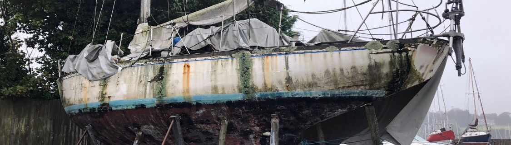

Refit
Refitting, this is Passe-Coque's skill.
A team of volunteer experts works on their knowledge transmission and provides all the required
tools to refit and renew the botas of the association. Passe-Coque, it's also a premise
in Saint-Philibert big enough to manage up to 5 projects in a sheltered place, simultaneously.
 Meeting in St Philibert
Meeting in St Philibert
Meet the team HERE.
Pordin-Nancq at Billie-Marine, in Hennebont.
 The underside of Pordin-Nancq
The underside of Pordin-Nancq
 New paint for the keel
New paint for the keel
The Cognac's keel.
TRANSMIT
SHARE